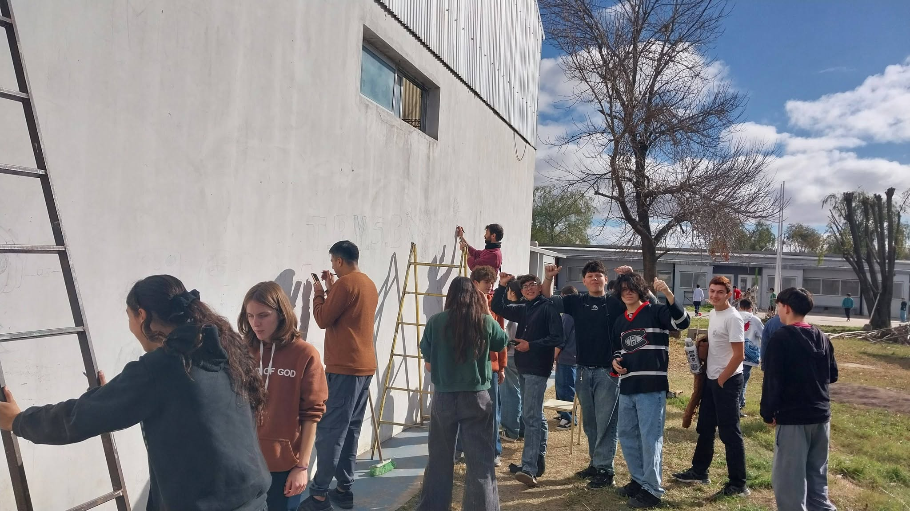
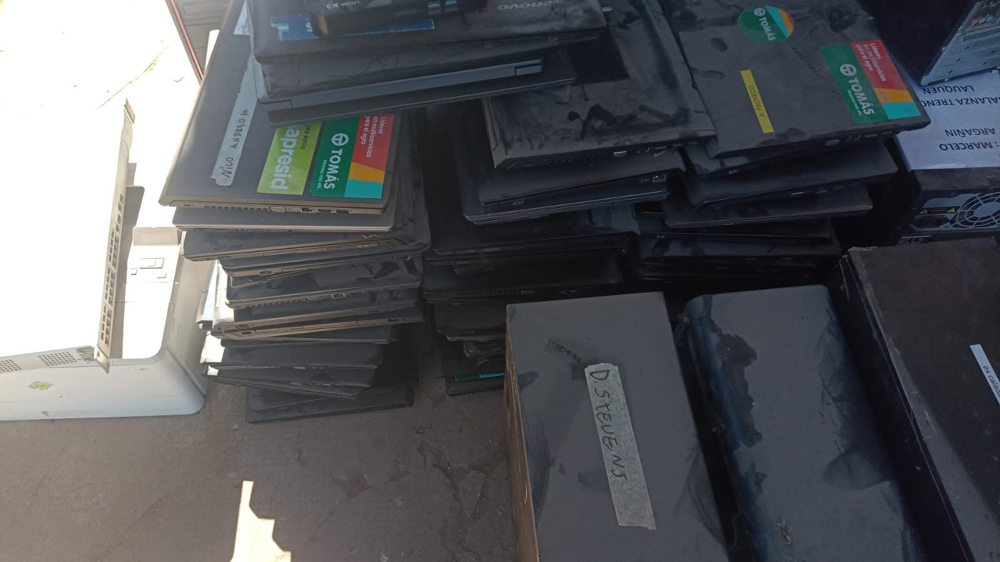
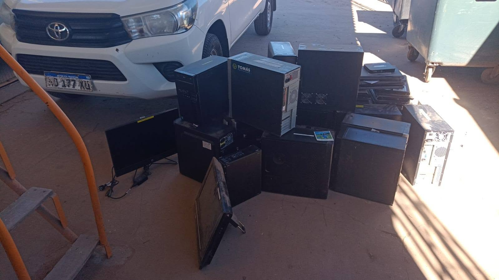
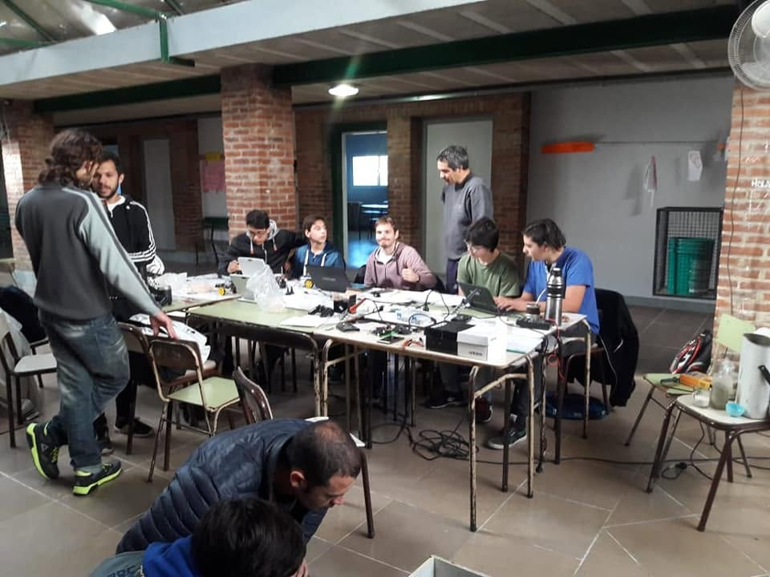
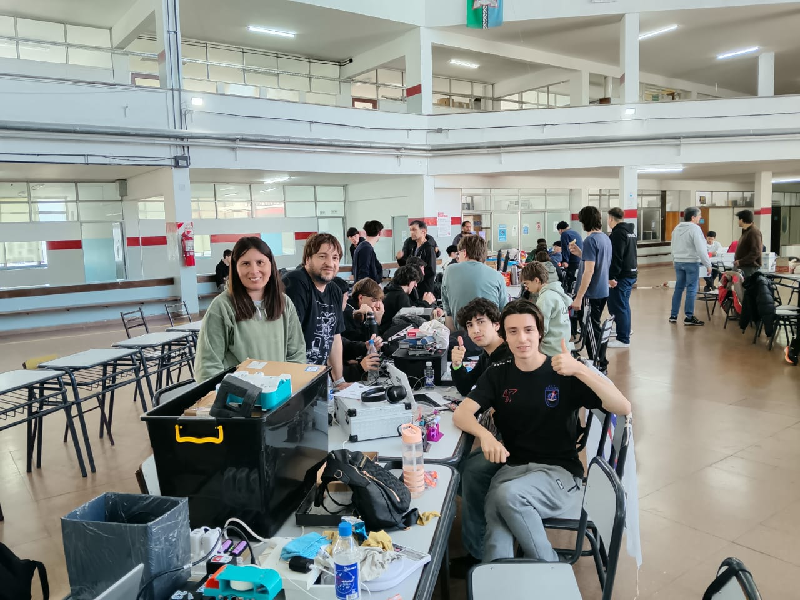
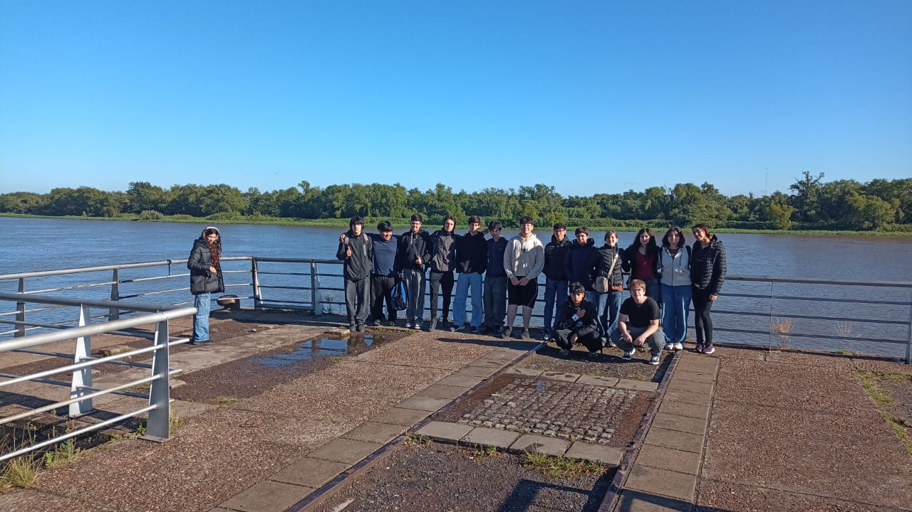

Sobre esta exposición
Esta galería reúne los trabajos realizados por los estudiantes de la modalidad de Informatica de obras de la Escuela de Educación Secundaria Técnica de Carlos Casares. A lo largo del año, los alumnos desarrollaron proyectos aplicando en la práctica lo aprendido en el taller y en el aula. Cada obra muestra el esfuerzo, la creatividad y el trabajo en equipo de nuestros estudiantes, y refleja el compromiso de la escuela técnica con la formación de futuros profesionales
informacion de contacto
toca en uno de esos dos que te llevara a la pagina de la escuela!